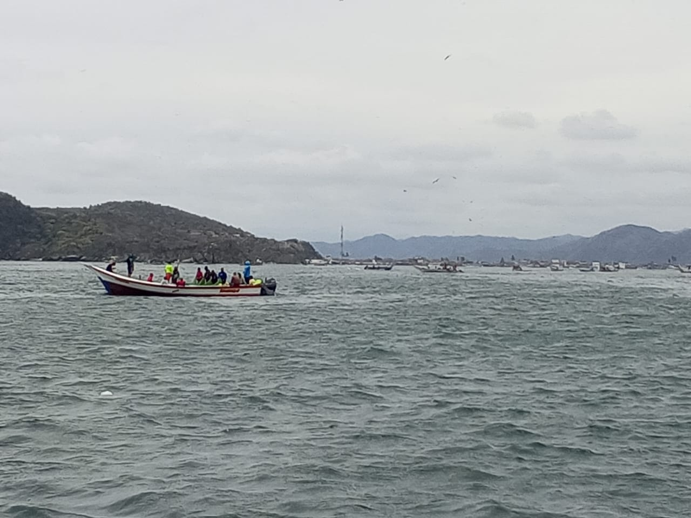
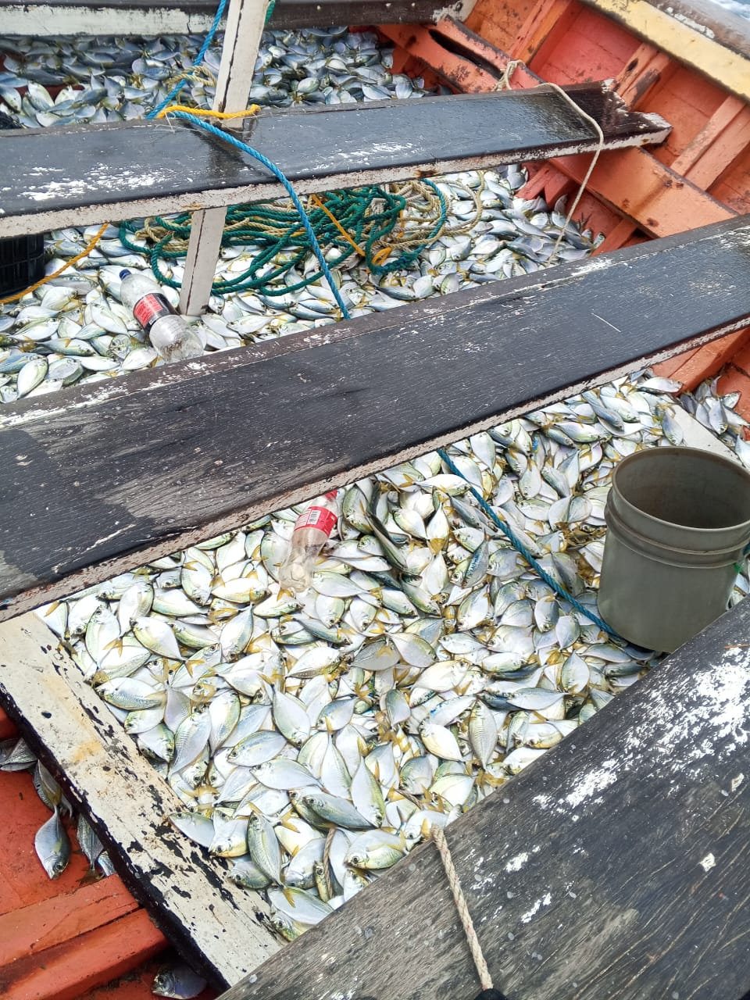
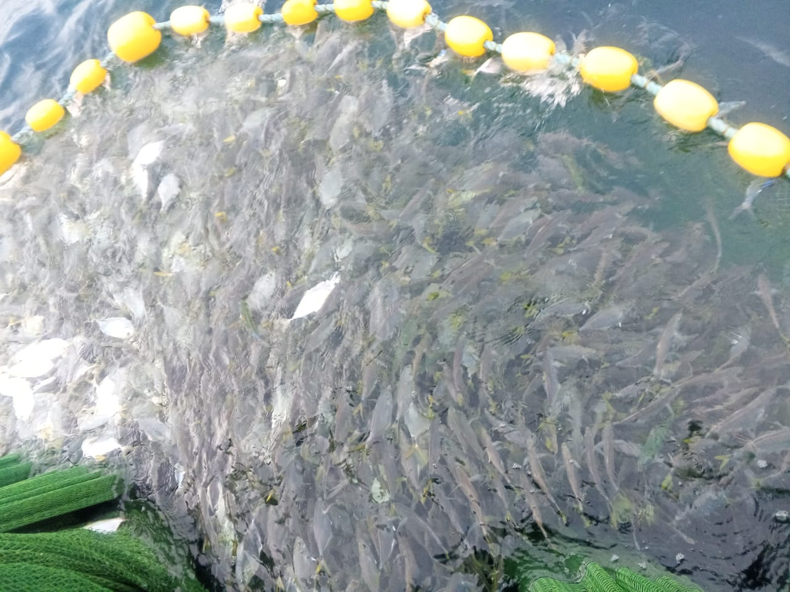

Economía de El Morro de Puerto Santo
La economía de El Morro de Puerto Santo ha estado históricamente sustentada en la actividad pesquera, convirtiéndose en la principal fuente de ingreso para sus habitantes desde tiempos coloniales. Durante décadas, la organización productiva giró en torno a los propietarios de mandingas y embarcaciones, quienes concentraban los medios de producción, mientras los pescadores trabajaban bajo un sistema de reparto de ganancias. El producto obtenido se dividía en partes iguales entre dueño y trabajadores, aunque en la práctica muchos pescadores permanecían atados económicamente debido a deudas por alimentos, utensilios y suministros básicos.
Con el paso del tiempo, la estructura tradicional fue evolucionando. Las antiguas mandingas y botes de remo fueron sustituidos por embarcaciones a motor, aumentando la capacidad de captura y ampliando las zonas de pesca hacia áreas más lejanas. Sin embargo, durante muchos años no existieron infraestructuras adecuadas para conservar y comercializar toda la producción. El frigorífico pesquero, creado en los años sesenta, inicialmente no generó grandes beneficios, pero posteriormente se convirtió en un elemento clave para la comercialización de la sardina y en una fuente importante de empleo directo e indirecto dentro de la comunidad.

En las últimas décadas del siglo XX, la actividad pesquera experimentó una notable expansión. El número de lanchas dedicadas a la pesca de especies como mero y pargo aumentó considerablemente, al igual que la distribución del producto hacia otras ciudades del país mediante camiones cavas y sucursales comerciales establecidas en distintos estados. La pesca de sardina también se incrementó, permitiendo el surgimiento de pequeñas empresas procesadoras que generaron cientos de empleos. Este crecimiento consolidó al pueblo como uno de los principales puertos pesqueros del estado e incluso del país, ampliando su importancia económica a nivel regional.
No obstante, el desarrollo no ha estado exento de dificultades. Problemas como la pesca de arrastre, el aumento en los costos de insumos, las condiciones climáticas adversas y la competencia de embarcaciones provenientes de otros estados han impactado la actividad. Asimismo, la falta de conciencia ecológica en determinados momentos ha contribuido a la disminución de algunas especies marinas. A pesar de estos retos, la pesca continúa siendo el eje fundamental de la economía local, moldeando no solo la producción y el comercio, sino también la dinámica social y laboral de la comunidad.

En El Morro de Puerto Santo, la captura de la sardina se realiza principalmente mediante técnicas de pesca artesanal transmitidas de generación en generación. Los pescadores salen al amanecer en pequeñas embarcaciones y localizan los bancos de sardinas observando el movimiento del agua y la presencia de aves marinas, que indican su ubicación.
Una vez identificada la zona, utilizan redes especiales que rodean cuidadosamente el cardumen, permitiendo una captura eficiente sin dañar otras especies. Posteriormente, el producto es trasladado a la orilla para su selección y distribución, garantizando frescura y calidad para el consumo local y comercial. Este proceso no solo representa una actividad económica fundamental para la comunidad, sino también una tradición que forma parte de la identidad cultural del pueblo.
